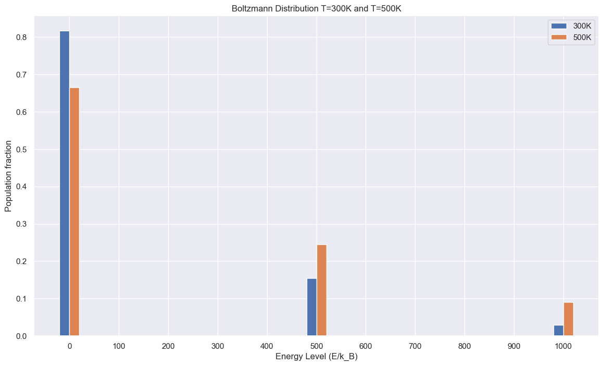
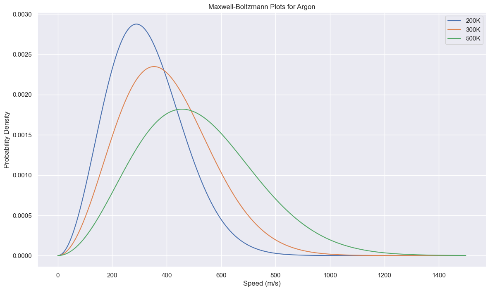

Statistical Mechanics
Introduction
Refresher on Microstates and Macrostates
Entropy
Boltzmann Definition of Entropy
Boltzmann Distribution
Equilibrium
We previously went over microstates in the probability chapter.
A system at equilibrium has states that are populated proportional to
$$p(a)= \frac{e^{-\frac{E_a}{k_BT}}}{Q}$$
where p(a) is the population of a microstate a, \(E_a\) is the energy level of state a, \(k_B\) is Boltzmann's constant (\(1.38\times 10^{-23}\)J/K), T is temperature, and Q is a normalization factor.
Sometimes we will instead write the denominator for the exponent as
$$\beta = \frac{1}{k_BT}$$
We can also describe the ratio of how populated two microstates are by
$$\frac{p(a)}{p(b)}=e^{-\frac{E_a-E_b}{k_BT}}$$
We can write this without a proportionality as the normalization factor cancels out.
This implies that two microstates with the energy are equally populated at equilibirium.
It also states that microstates at lower energy will be more populated than high energy microstates.
Why is the Boltzmann distribution what we observe for a system? The derivation is beyond the scope of this text, but the Boltzmann distribution maximizes
total entropy (not system entropy).
Multiplicity
What the Boltzmann distribution gave us was a way to relate populations of
microstates, but what about states?
Let us consider a two level system.
- 1 ground state (G) - Energy=0
- 2 excited states (A and B) - Energy=E
From the Boltzmann distribution we know
$$\frac{p(A)}{p(G)}=\frac{e^{-\frac{E}{k_BT}}}{Q}$$
and also
$$\frac{p(B)}{p(G)}=\frac{e^{-\frac{E}{k_BT}}}{Q}$$
The proportion of molecules in the excited state would thus be given by
$$\frac{p(E)}{p(G)}=\frac{\nu_E}{\nu_G}e^{-\frac{E}{k_BT}}=e^{-\frac{E}{k_BT}}2$$
where \(nu_i\) is the degeneracy (amount of microstates within the state) for state i.
In this case, \(\nu_E=2\) and \(\nu_G=1\)
In order to calculate Q
$$Q=\sum e^{-\frac{E_{i}}{k_BT}}$$
One interpretation of Q is that it is the number of thermally accessible states at a given temperature.
Below is a graph of a 3-level system where each state has degeneracy=1 and the energy levels are \(0K_B\), \(500K_B\), \(1000K_B\)

Python code:
energy_levels = [0, 500, 1000] # energy levels in multiples of k_B
def GetBoltzmann(E,T):
# k_B = 1.38e-23
k_B = 1
return np.exp(-E/(k_B*T))
def GetQ(array,T):
accum = 0
for item in array:
accum += GetBoltzmann(item,T)
return [GetBoltzmann(E,T) for E in array]/accum
plt.figure(figsize=(14,8))
width = 20
plt.bar([i-width/2 for i in energy_levels],
GetQ(energy_levels, 300),width=20)
plt.bar([i+width/2 for i in energy_levels],
GetQ(energy_levels, 500),width=20)
plt.xlabel("Energy Level (E/k_B)")
plt.ylabel("Population fraction")
plt.xticks([100*i for i in range(0,11)])
plt.title("Boltzmann Distribution T=300K and T=500K")
plt.legend(["300K","500K"])
plt.show()
Maxwell-Boltzmann Distribution
So we've seen that the Boltzmann distribution makes lower energy microstates more populated.
Does this mean that lower energy states are always more populated?
The answer is not necessarily; higher energy macrostates can be more populated if there are more microstates than there are in the lower energy levels and you are at a sufficient temperature.
One example is how speed for molecules are distributed, called the Maxwell-Boltzmann distribution.
The multiplicity for the number of microstates for a given speed is proportional to the square of the speed, as it is like the surface area of a sphere of radius v, where v is the speed.
$$f(v)=(\frac{m}{2\pi k_BT})^{3/2}\times(4\pi v^2)\times\exp(-\frac{m}{2k_BT}v^2)$$
While the distribution may not initially appear like a Boltzmann distribution, this is because it is parameterized in terms of speed.
By using the kinetic energy equation
$$K=\frac{1}{2}mv^2$$
You recover the familiar decaying exponential.
The resulting distribution is shown below.

Python code:
def Maxwell_Boltzmann(x,T, m):
if type(x) == np.array or type(x) == list:
return np.array([Maxwell_Boltzmann(i,T,m) for i in x])
k_B = 1.38e-23
return (m/(2*np.pi*k_B*T))**(3/2)*(4*np.pi*x**2)*np.exp(-m*(x**2)/(2*k_B*T))
v_array = [i for i in range(0,1500)]
m_argon = 1.6605e-27*39.89
plt.figure(figsize=(14,8))
plt.plot(v_array,Maxwell_Boltzmann(v_array,T=200,m=m_argon))
plt.plot(v_array,Maxwell_Boltzmann(v_array,T=300,m=m_argon))
plt.plot(v_array,Maxwell_Boltzmann(v_array,T=500,m=m_argon))
plt.title("Maxwell-Boltzmann Plots for Argon")
plt.xlabel("Speed (m/s)")
plt.ylabel(f"Probability Density")
plt.legend(['200K','300K','500K'])
plt.show()
Heat Capacity
In order to calculate the average energy of the system, we can take the expected value of the energy
$$\lt E \gt=\sum_{\nu}E_{\nu}P(\nu)$$
It can be shown that
$$\lt E \gt = -\frac{\partial \ln Q}{\partial B}$$
By taking the second derivative of Q with respect to beta, it can be further shown that
$$\text{Var}(E)=K_BT^2\frac{\partial \lt E \gt}{\partial T}$$
Concentration and Its Effect
$$\Delta G = \Delta G^0 + RT \ln(Q)$$
where Q is the current concentration for the equilibrium K expression.
Imagine a reaction of an ion going from one area to another with the two concentrations being different.
$$Ca^{2+}_{left}\rightleftharpoons Ca^{2+}_{right}$$
Since there is no actual chemical reaction, \(\Delta G^0=0\)
However, since the concentrations are different
$$Q=\frac{[Ca^{2+}_{right}]}{[Ca^{2+}_{right}]}$$
Equilibrium and Gibbs
We are given \(\Delta G^0=-RT \ln(K)\)
Equilibirium is reached when dG=0.
$$0=-RT\ln(K)+RT\ln(Q)$$
Since log is a bijective function, we can conclude that equilibrium is reached when
$$Q=K$$